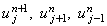
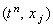
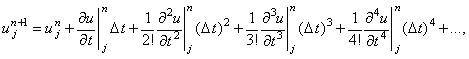
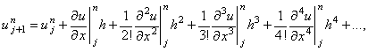
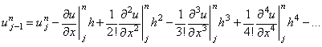

|
3.3. Порядок аппроксимации разностной схемы
Мы ввели понятие разностной схемы путём составления её из
отдельных разностных операторов. Напомним, что каждый разностный оператор имеет определённый
порядок аппроксимации, характеризующий точность аппроксимации. Следовательно, разностная
схема также будет иметь порядок аппроксимации, причём по каждой независимой переменной
отдельно.
Определим порядок аппроксимации явной разностной
схемы (2.14). Для этого запишем разложение значений 
в ряд Тейлора относительно точки 
на разностной сетке:
| |
 |
(2.16) |
| |
 |
(2.17) |
| |
 |
(2.18) |
Подставляя зависимости (2.16)-(2.18) в разностную схему (2.14), получаем:
Таким образом, явная разностная схема (2.14) аппроксимирует
исходное дифференциальное уравнение (2.13) с первым порядком по времени и со вторым
порядком по координате, что записывается в следующем виде:
Легко видеть, что и неявная разностная схема (2.15)
имеет тот же порядок аппроксимации.
|